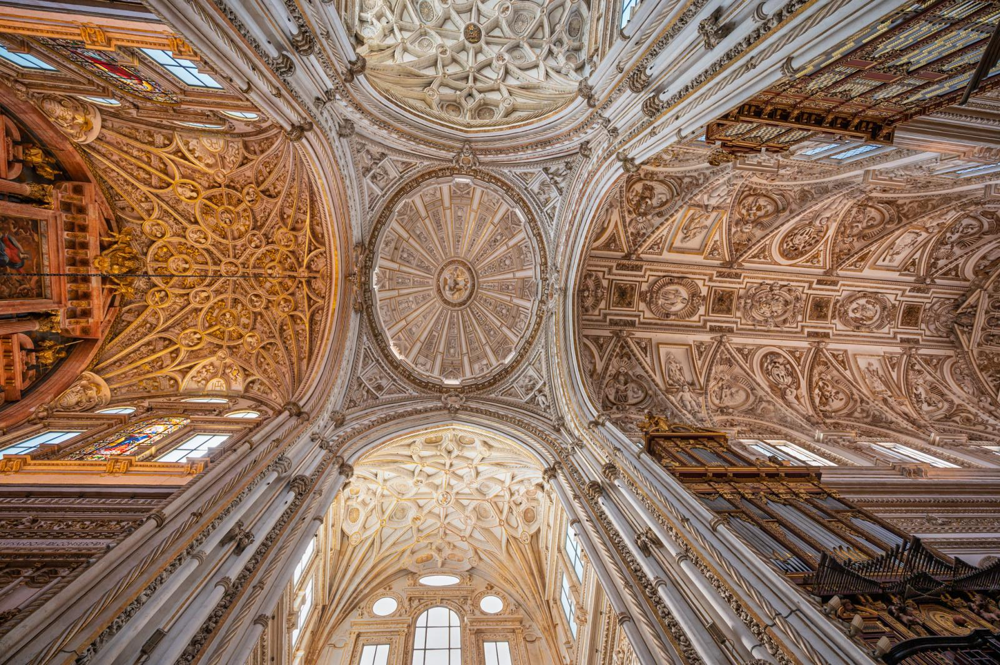
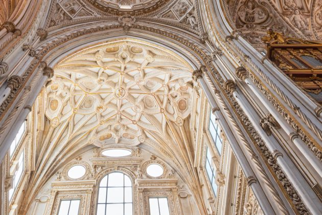
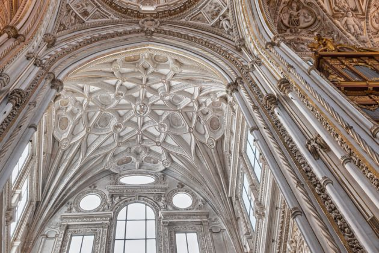
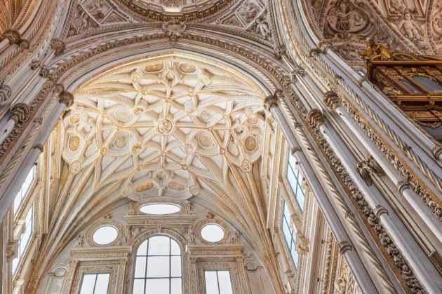
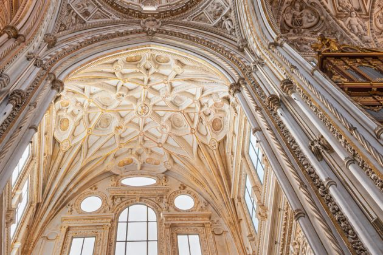
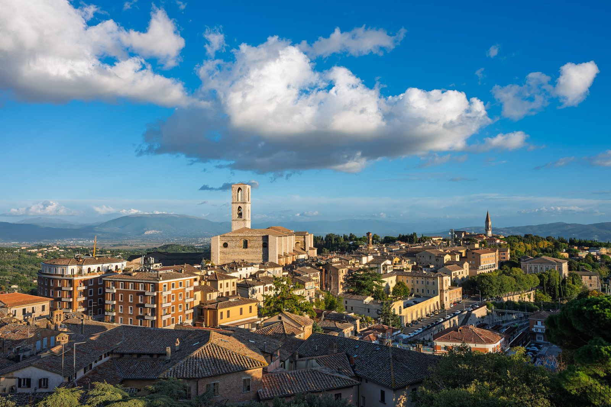
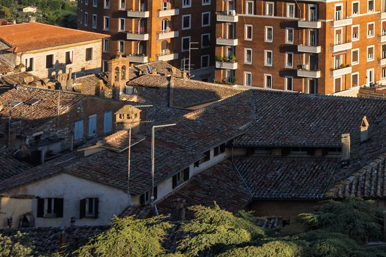
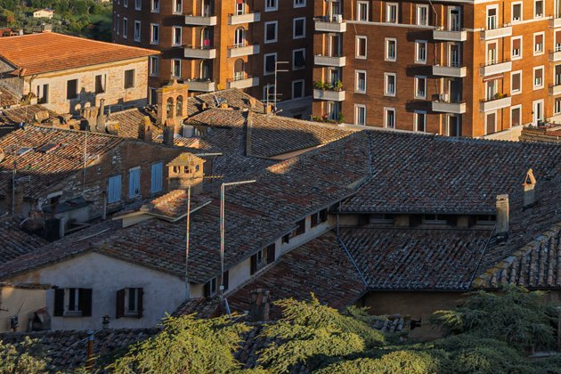
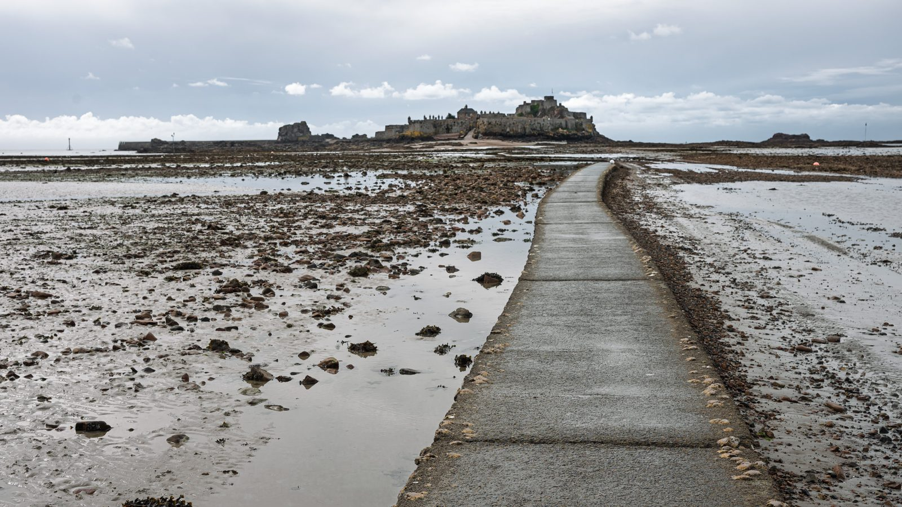
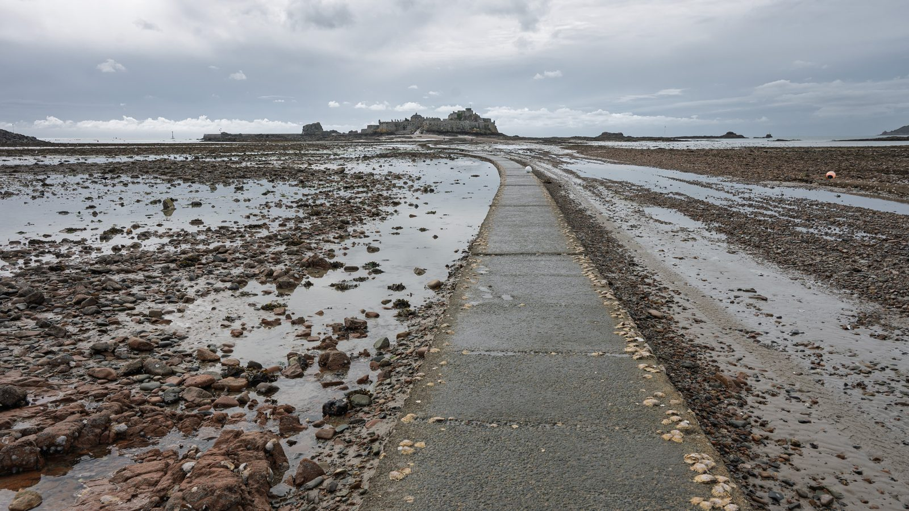

For photographers
Edit with a creative peer.
A second pair of eyes for your edits, and a way to learn why they work.
Noemeo looks at your photo the way a fellow photographer would — what’s working, what’s holding it back, what you might try next — and talks it through with you. Post-processing becomes a conversation, not a chore.
Noemeo Workspace is a desktop app for macOS (Windows support is planned). It reviews your photos and suggests edits; it never changes them. You make the edits yourself, in Lightroom Classic or whichever editor you use.
Request beta access
How it works
A critique you can argue with
-
01
Review
Add a photo and get a verdict on its craft and emotional impact, with a written critique: what's working, what isn't, and concrete suggestions.
-
02
Talk it through
Ask why, push back, or explain what you were going for. Noemeo takes what you tell it into account, and you can see and remove anything it remembers about a photo.
-
03
Edit and compare
Bring in a new version and ask whether it's better. Noemeo compares it against what came before instead of judging it from scratch.
A real session
Córdoba: better, or too much?
Noemeo’s first read pointed out what the photographer hadn’t noticed: the bright windows at the bottom pull the eye away from the dome. The photographer darkened them and asked, “Is it better, or is it too much?” Noemeo measured the change and found the mask had reached beyond the windows:
“The lower central vault is about 15 L* darker, substantially cooler, and less saturated, turning the original warm continuation into a grey, relatively detached section.”
The photographer had seen the darkening, but not the lost saturation: in Lightroom Classic a new mask doesn’t always start from neutral settings, and this one had turned saturation down too. Noemeo’s answer sent the photographer back to the sliders, and two more edits followed.





The outline marks where the details come from. Enlarge a detail and flip through the four versions.
Noemeo’s first read · Strong
Strong: coherent, engaging, and substantially resolved, with qualities that sustain attention beyond competent execution.
- What works
- The upward viewpoint turns the intersecting vaults into an enveloping architectural experience, with sweeping ribs carrying the eye toward the central dome. Warm gold on the left, pale stone through the center, and dark organ pipes on the right give the intricate ornament a readable hierarchy. Detail remains clear enough to reward exploration without losing the larger sensation of grandeur.
- What holds it back
- The bright windows along the bottom edge pull attention away from the central vault, slightly weakening its role as the visual destination. Otherwise, the main limitation is interpretive rather than technical: the photograph conveys the building’s magnificence convincingly, but offers less of a distinctive emotional perspective beyond awe at its ornament and scale.
- Leave as it is
- Keep the pronounced convergence of the columns and arches: it expresses the sensation of looking overhead and makes the architecture feel enveloping.
- Keep the contrast between the warmer left-hand vault and the cooler central stonework, which separates the architectural spaces and prevents the ornament from becoming visually uniform.
- Edits to try
- Gently reduce the brightness of the bottom-edge windows and their immediate surrounds to keep attention circulating around the central dome; this would slightly reduce the sense of daylight flooding the interior, so avoid making the windows gray.
New version
Reduced bottom brightness. Is it better, or is it too much?
Compared with the version you started with: further from what you were going for.
The reduction is clearly present, and the current version handles the bright bottom windows better: they no longer pull as insistently from the central dome, so the tonal change itself moves the image closer to the assessment’s concern. It is not too dark in a clipping or blocked-shadow sense.
But the adjustment reaches too far beyond brightness. The lower central vault is about 15 L* darker, substantially cooler, and less saturated, turning the original warm continuation into a grey, relatively detached section. That weakens the warm-left/cool-center relationship and the sense of light carrying through the architecture. The extra local contrast near the bottom also makes that area busier, while the section immediately above has become slightly softer.
I’d keep some reduction at the windows, but restore much of the warmth and brightness in the surrounding vault. In short: the aim helped; the present mask is too broad and too chromatically heavy.
Left out: a new version and one exchange
New version
Do you like it more? I slightly raised the temperature of the mask
Compared with your previous version: closer to what you were going for.
Yes—more than the previous version. The slight temperature increase restores a natural golden continuity in the lower vault, so it no longer feels grey or detached, while the windows remain sufficiently restrained. The warmer area is noticeable, but it now relates to the warmth on the left rather than reading as an isolated colour patch.
It also improves on the original overall: the lower windows pull less strongly, and the central dome remains the clearer destination. There has been no troublesome global colour drift; the change is concentrated low in the frame. I’d stop here—the remaining brightness at the bottom helps explain the illumination and depth rather than competing with the dome.
Show the whole conversation
Noemeo’s first read · Strong
Strong: coherent, engaging, and substantially resolved, with qualities that sustain attention beyond competent execution.
- What works
- The upward viewpoint turns the intersecting vaults into an enveloping architectural experience, with sweeping ribs carrying the eye toward the central dome. Warm gold on the left, pale stone through the center, and dark organ pipes on the right give the intricate ornament a readable hierarchy. Detail remains clear enough to reward exploration without losing the larger sensation of grandeur.
- What holds it back
- The bright windows along the bottom edge pull attention away from the central vault, slightly weakening its role as the visual destination. Otherwise, the main limitation is interpretive rather than technical: the photograph conveys the building’s magnificence convincingly, but offers less of a distinctive emotional perspective beyond awe at its ornament and scale.
- Leave as it is
- Keep the pronounced convergence of the columns and arches: it expresses the sensation of looking overhead and makes the architecture feel enveloping.
- Keep the contrast between the warmer left-hand vault and the cooler central stonework, which separates the architectural spaces and prevents the ornament from becoming visually uniform.
- Edits to try
- Gently reduce the brightness of the bottom-edge windows and their immediate surrounds to keep attention circulating around the central dome; this would slightly reduce the sense of daylight flooding the interior, so avoid making the windows gray.
New version
Reduced bottom brightness. Is it better, or is it too much?
Compared with the version you started with: further from what you were going for.
The reduction is clearly present, and the current version handles the bright bottom windows better: they no longer pull as insistently from the central dome, so the tonal change itself moves the image closer to the assessment’s concern. It is not too dark in a clipping or blocked-shadow sense.
But the adjustment reaches too far beyond brightness. The lower central vault is about 15 L* darker, substantially cooler, and less saturated, turning the original warm continuation into a grey, relatively detached section. That weakens the warm-left/cool-center relationship and the sense of light carrying through the architecture. The extra local contrast near the bottom also makes that area busier, while the section immediately above has become slightly softer.
I’d keep some reduction at the windows, but restore much of the warmth and brightness in the surrounding vault. In short: the aim helped; the present mask is too broad and too chromatically heavy.
New version
Is it better? The previous mask accidentally severely reduced saturation. I restored saturation and confined the mask area to the windows and made it softer
Compared with your previous version: further from what you were going for.
Your correction is visible: saturation and warmth have returned around the lower vault, and the transition is softer. Compared with the immediately previous version, though, it goes a little too far—the mask now brightens and warms much of the lower-centre vault, not only the windows. That golden patch competes more with the central dome and feels less integrated with the cooler stone around it.
Against the original, it is still better overall: the bottom windows exert less pull, while the architecture retains more colour than in the desaturated intermediate version. So the restoration fixed the main accident, but I’d split the difference: keep the restored saturation, and reduce the mask’s warmth and brightness over the vault while preserving the stronger reduction directly on the window panes.
New version
Do you like it more? I slightly raised the temperature of the mask
Compared with your previous version: closer to what you were going for.
Yes—more than the previous version. The slight temperature increase restores a natural golden continuity in the lower vault, so it no longer feels grey or detached, while the windows remain sufficiently restrained. The warmer area is noticeable, but it now relates to the warmth on the left rather than reading as an isolated colour patch.
It also improves on the original overall: the lower windows pull less strongly, and the central dome remains the clearer destination. There has been no troublesome global colour drift; the change is concentrated low in the frame. I’d stop here—the remaining brightness at the bottom helps explain the illumination and depth rather than competing with the dome.
From a real session, shared by the photographer, who made every edit. Noemeo’s replies and assessment are unedited. The short view leaves one exchange out; the whole conversation shows every turn up to the final edit, without the step-by-step Lightroom suggestions Noemeo attached to two replies.
A real session
Perugia: is the new version better?
One photo of Perugia, seven versions. Before each answer about a new version, Noemeo measures on your computer what the new version changed: tone, colour, local edits, contrast and fine detail. So when the photographer only asks “Better?”, it can say where the edit landed, say plainly when a change is too small to register, and keep its advice tied to what the photographer is after: perspective.



The outline marks where the details come from. The edits are local and small: enlarge a detail and flip between the two versions to see them.
Noemeo’s first read · Strong
Strong: coherent, engaging, and substantially resolved, with qualities that sustain attention beyond competent execution.
- What works
- The sunlit church anchors the town beneath a sweeping cloud, giving the photograph a clear relationship between human scale and open sky. Overlapping tiled roofs establish depth, while the distant mountains soften into blue haze. Warm stone against cool sky feels inviting and expansive; the carefully held cloud highlights and textured foreground shadows keep that sense of place tangible.
- What holds it back
- The church is readable, but the large apartment blocks at left compete with it through their bright facades and repeated windows, making this more an attractive town panorama than a distinctive architectural portrait. The light reveals the scene beautifully without creating a particularly unusual moment. Four faint dust spots are present in plain areas, mostly noticeable only under magnification.
- Leave as it is
- Keep the substantial sky: the cloud's breadth gives the town scale and supplies the photograph's expansive feeling.
- Keep the deep foreground shadows, whose retained texture provides depth without making every roof compete equally for attention.
New version
Do you like it better?
Compared with the version you started with: further from what you were going for.
No—the original works better. The current edit preserves the expansive sky, cloud highlights, and overall colour, but it darkens the lower-left foreground and reduces detail across the lower half. That makes the roofs and façades softer and heavier, weakening the layered depth that made the town feel tangible; the church does not gain enough separation to offset that loss. Nothing appears materially clipped, so this is about tonal weight and texture rather than lost data. I’d return most of the lower-half softening and shadow darkening toward the original, while leaving the sky as it is.
I wanted to show a perspective
That helps: if the aim is to show perspective through the overlapping roofs and the town receding toward the mountains, the current edit moves against it slightly. Darkening and softening the lower half compresses the near-to-far layering; the original foreground texture gave the eye more footholds before moving toward the church and distant landscape. I’d keep the foreground shaded, but restore some local definition rather than brighten it broadly. The substantial sky still helps by setting the town’s scale.
Left out: two new versions and two exchanges
I'd slightly boost global contrast. What do you think?
Left out: Noemeo’s reply · new version
Did it. Better?
Compared with your previous version: about the same.
Compared with the immediately previous version, it’s too close to call—and the files show no change above the measurement threshold. I can’t reliably see a global-contrast increase either, so if you applied one, it is extremely subtle.
That restraint is appropriate: the foreground keeps its texture, the church remains readable, and the cloud highlights are intact. It also avoids making the bright apartment blocks at left compete more strongly. Against the original, however, the current rendering still has softer mid-scale separation through the lower town, so this particular contrast adjustment hasn’t visibly recovered that layered definition. I’d leave it rather than push global Contrast harder; any further refinement would be better confined to modest Texture or Clarity over the town only, excluding the sky and distant mountains.
Left out: a new version and one exchange
New version
Returned the mask to the approximately previous position
Compared with your previous version: closer to what you were going for.
Yes—the measurements support that. Relative to the preceding version, the renewed mid-scale detail is concentrated across the central lower town rather than extending uniformly to the bottom edge, so the gradient is effectively back nearer its earlier position. The layered roofs and façades through the center read more distinctly, which better supports the intended recession toward the church and landscape.
The darker, slightly less saturated treatment at the lower-right edge also quiets that corner, although its reduced fine detail is a small trade-off. Compared with the original, the lowest foreground remains somewhat softer overall, but that keeps it from competing with the middle-distance town. I’d stop here rather than add more Clarity or Texture.
Show the whole session
Noemeo’s first read · Strong
Strong: coherent, engaging, and substantially resolved, with qualities that sustain attention beyond competent execution.
- What works
- The sunlit church anchors the town beneath a sweeping cloud, giving the photograph a clear relationship between human scale and open sky. Overlapping tiled roofs establish depth, while the distant mountains soften into blue haze. Warm stone against cool sky feels inviting and expansive; the carefully held cloud highlights and textured foreground shadows keep that sense of place tangible.
- What holds it back
- The church is readable, but the large apartment blocks at left compete with it through their bright facades and repeated windows, making this more an attractive town panorama than a distinctive architectural portrait. The light reveals the scene beautifully without creating a particularly unusual moment. Four faint dust spots are present in plain areas, mostly noticeable only under magnification.
- Leave as it is
- Keep the substantial sky: the cloud's breadth gives the town scale and supplies the photograph's expansive feeling.
- Keep the deep foreground shadows, whose retained texture provides depth without making every roof compete equally for attention.
New version
Do you like it better?
Compared with the version you started with: further from what you were going for.
No—the original works better. The current edit preserves the expansive sky, cloud highlights, and overall colour, but it darkens the lower-left foreground and reduces detail across the lower half. That makes the roofs and façades softer and heavier, weakening the layered depth that made the town feel tangible; the church does not gain enough separation to offset that loss. Nothing appears materially clipped, so this is about tonal weight and texture rather than lost data. I’d return most of the lower-half softening and shadow darkening toward the original, while leaving the sky as it is.
I wanted to show a perspective
That helps: if the aim is to show perspective through the overlapping roofs and the town receding toward the mountains, the current edit moves against it slightly. Darkening and softening the lower half compresses the near-to-far layering; the original foreground texture gave the eye more footholds before moving toward the church and distant landscape. I’d keep the foreground shaded, but restore some local definition rather than brighten it broadly. The substantial sky still helps by setting the town’s scale.
New version
Better?
Compared with your previous version: closer to what you were going for.
Compared with the immediately previous version, yes. Lifting the lower town and restoring foreground detail makes the overlapping roofs easier to follow, so the eye moves more clearly from the near buildings through the church and toward the mountains. The gentler overall contrast also keeps the foreground from becoming a heavy visual block.
Compared with the original, however, it still gives up some crisp local separation across the lower half, so the original conveys the layered recession a little more decisively. Colour and white balance have remained essentially stable, and the substantial sky still provides useful scale. I’d stop lifting the shadows here and restore a modest amount of Texture/Clarity selectively to the town—not the sky or distant mountains.
New version
And now?
Compared with your previous version: closer to what you were going for.
Yes—this latest change moves it closer than the immediately previous version. The restored fine detail in the lower-left and central town makes roof edges and overlapping façades read more distinctly, strengthening the layered recession you want without broadly brightening the shadows. The sky, distant haze, and colour remain stable, so the added foreground definition has not cost the expansive atmosphere.
Against the original, the current version is still about 5% gentler in overall contrast and retains somewhat less mid-scale definition across much of the lower half. That makes it slightly softer and calmer, while the original separates the architectural layers more decisively. I’d leave this version here rather than add more sharpening: further detail could make the foreground roofs and bright apartment blocks compete harder with the church.
I'd slightly boost global contrast. What do you think?
A slight global contrast boost makes sense. It should recover some of the near-to-far separation still missing versus the original, while preserving the useful detail you restored in the town. Keep it restrained: watch the bright apartment façades at left and the cloud highlights, since stronger contrast could make both compete more with the church. I’d try about +3 to +5 Contrast and stop if the foreground shadows begin to feel heavier; the current blacks already retain texture, so there is no need to deepen them aggressively.
New version
Did it. Better?
Compared with your previous version: about the same.
Compared with the immediately previous version, it’s too close to call—and the files show no change above the measurement threshold. I can’t reliably see a global-contrast increase either, so if you applied one, it is extremely subtle.
That restraint is appropriate: the foreground keeps its texture, the church remains readable, and the cloud highlights are intact. It also avoids making the bright apartment blocks at left compete more strongly. Against the original, however, the current rendering still has softer mid-scale separation through the lower town, so this particular contrast adjustment hasn’t visibly recovered that layered definition. I’d leave it rather than push global Contrast harder; any further refinement would be better confined to modest Texture or Clarity over the town only, excluding the sky and distant mountains.
New version
I moved the linear gradient mask from the bottom up to cover more of the town, and slightly boosted clarity and texture in that mask
Compared with your previous version: closer to what you were going for.
Yes—the measurements support that change. Compared with the prior version, fine detail rises across the left third of the lower half, so roof edges and overlapping façades read more distinctly. That moves the image closer to your aim of emphasizing layered recession: the foreground now establishes a clearer first plane before the church and distant landscape.
The trade-off is unevenness: mid-scale detail falls across much of the lower-right town while fine detail increases at the far right, and that corner is also slightly brighter and more saturated. This makes the right edge feel a little busier without adding as much depth as the restored detail on the left. Against the original, the current image remains about 6% gentler in overall contrast and broadly softer through the bottom quarter, so the town still separates less decisively—but the softer rendering keeps the foreground from overwhelming the church and cloud. I’d keep the gradient position and avoid adding more Texture or Clarity.
New version
Returned the mask to the approximately previous position
Compared with your previous version: closer to what you were going for.
Yes—the measurements support that. Relative to the preceding version, the renewed mid-scale detail is concentrated across the central lower town rather than extending uniformly to the bottom edge, so the gradient is effectively back nearer its earlier position. The layered roofs and façades through the center read more distinctly, which better supports the intended recession toward the church and landscape.
The darker, slightly less saturated treatment at the lower-right edge also quiets that corner, although its reduced fine detail is a small trade-off. Compared with the original, the lowest foreground remains somewhat softer overall, but that keeps it from competing with the middle-distance town. I’d stop here rather than add more Clarity or Texture.
From a real session, shared by the photographer. Noemeo’s replies and assessment are unedited. The short view leaves some turns out; the whole session shows every turn, without the edit cards Noemeo attached to some replies.
Comparing two photos
Two frames of the same causeway: which one?


A is tighter and more destination-driven: the larger fortress gives the causeway a stronger payoff, though the path becomes a visually heavy foreground slab. B steps back, making the exposed tidal landscape feel broader and lonelier; its stronger left-hand rocks add depth, while the orange buoy near the right edge pulls attention sharply. A’s brighter clouds feel more open, whereas B’s darker overhead cloud gives the scene greater austerity. With no stated purpose yet, these are two distinct emphases rather than a clear winner.
Key differences
- A frames the fortress substantially larger, while B makes it a smaller element within a broader tidal landscape.
- A’s causeway enters from the lower right; B places it nearer center and shows more of its curve.
- B includes stronger reddish foreground rocks on the left, creating more texture and depth than A’s smoother mudflats.
- A has brighter, broken clouds near the horizon; B carries a darker overhead cloud layer and mood.
Which image is more eye-catching?
Favours A
Shot A is more immediately eye-catching. Its larger, clearer fortress provides a stronger visual payoff, and the brighter sky separates the landmark more decisively. B has richer foreground texture and a moodier atmosphere, but its smaller fortress and broad terrain distribute attention more diffusely; the orange buoy also competes with the intended subject.
It is a story of a tide
Favours B
For a story about the tide, Shot B serves the idea better. Its wider field of exposed rocks, pools, channels, and wet sand makes the retreating sea—not merely the fortress—the subject. The longer causeway reinforces the revealed passage across the seabed. The orange buoy remains distracting, so I would remove or subdue it; a modest sky crop could also give the tidal textures more authority.
The whole comparison session, shared by the photographer. Noemeo’s replies are unedited; the key differences it listed are shown for its first reply.
Works with Lightroom Classic
Review photos straight from your catalog
- Review selected photos from the Library menu and keep the critique alongside each photo.
- Suggested ratings and flags are only ever suggestions — Noemeo asks before changing anything, and you can undo it.
- Suggest descriptive keywords for your photos.
- Lightroom is optional: you can also add photos to Noemeo directly.
Privacy
Your photos are stored only on your computer
Your photos, conversations and everything Noemeo learns about them are kept on your own computer — not in Noemeo's cloud.
Reviewing a photo does mean sending it out: for each review, Noemeo sends that photo and the text it needs to an AI model, through Amazon Web Services. It is processed for that request and not stored. Noemeo's cloud keeps only what an account needs: your sign-in, the names of the computers you use Noemeo on, and how much of your allowance you've used.
Availability
Noemeo is in closed beta
The beta is free, covers reviews of 20 photos, and is open to a limited number of photographers. Noemeo Workspace runs on macOS for now; Windows support is planned.
To join, write to ilya@noemeo.com and tell us:
- which editor you use (Lightroom Classic or another),
- what kind of photography you do,
- what you'd most like a second opinion on.
If there's a place, we'll send you a download link for the Mac app and a key to activate it.